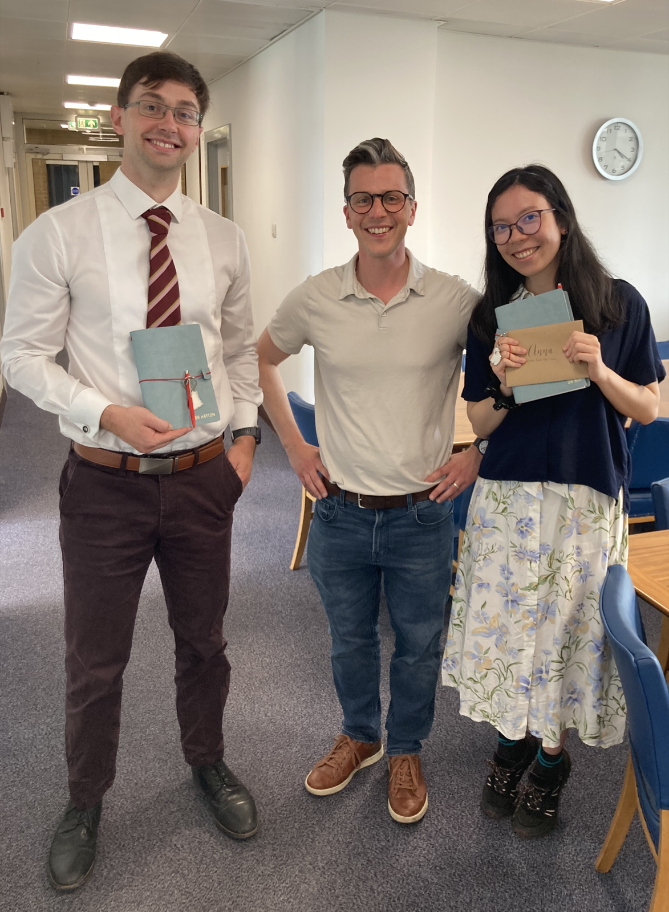
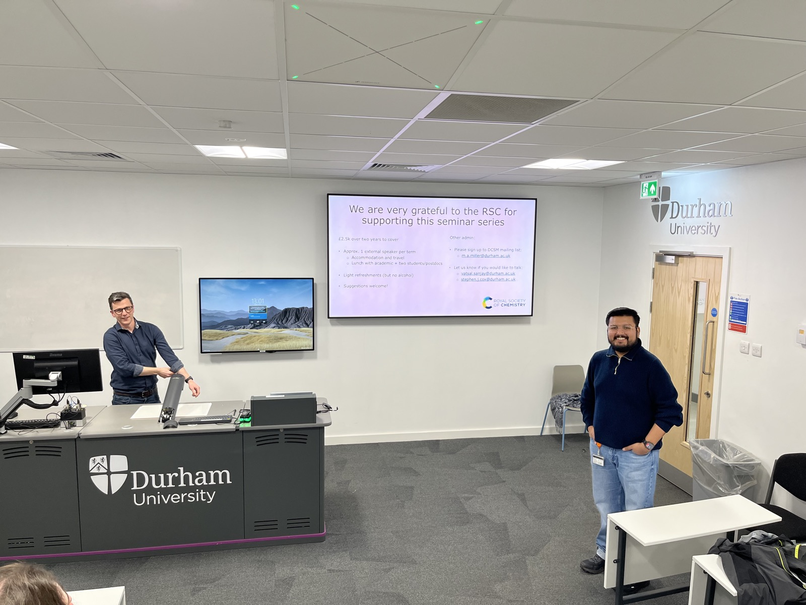
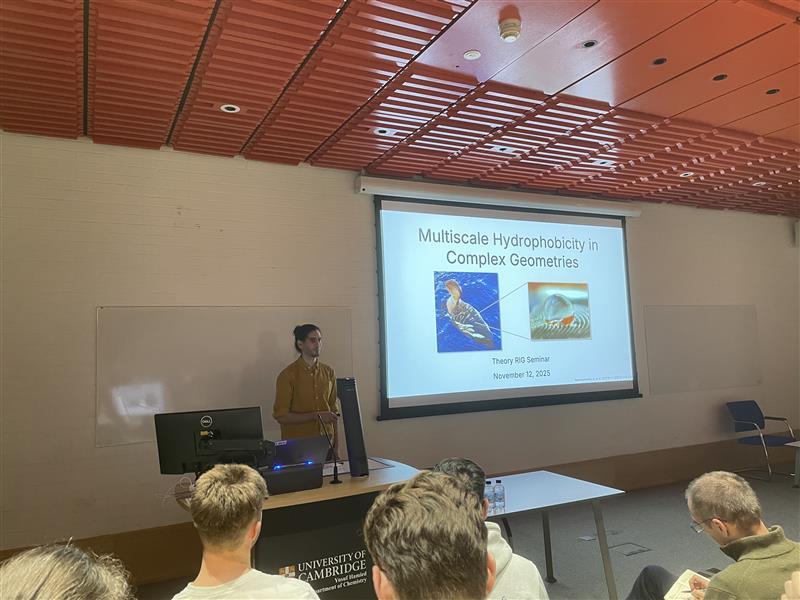

2026
Anna's paper on ab initio multiscale modeling of liquids published in PNAS (24 July 2026)
Delighted that Anna's paper A unified machine-learning framework for ab initio multiscale modeling of liquids has been accepted in Proc. Natl. Acad. Sci. USA!
In this work, we combine machine-learned interatomic potentials with neural classical density functional theory to bridge atomistic and continuum descriptions of liquids across length scales. Using this framework, we predict entirely from first principles how confinement modifies liquid-vapour coexistence in water, while also capturing the complex behaviour of supercritical carbon dioxide. These phenomena underpin technologies ranging from carbon capture and sustainable power generation to chemical separation and extraction.
Steve promoted to Associate Professor (1 July 2026)
Steve has been promoted from Assistant to Associate Professor. He's very grateful to all the support he's had from colleagues in Durham over the past two years, and, of course, his group for all the fantastic science they are doing!
Anna and John pass their PhD vivas! (19 June 2026)
We're delighted that both Anna and John passed their PhD vivas this week!

Anna Bui and John Hayton with Steve Cox - congratulations to both!
Anna's work has focused on developing (and applying) classical density functional theory to better understand how complex liquids behave across length scales. In addition, she has made significant contributions to our understanding of interfacial friction between water and graphitic surfaces.
John has been tackling the kinetics of crystal growth, with a particular emphasis on polar crystal surfaces. He has identified the rate-limiting step of crystal growth at NaCl (111), which he hopes to publish soon.
We're very proud of both Dr Bui and Dr Hayton!
Anna's paper on dielectrocapillarity accepted in Nature Communications (24 February 2026)
Excited that Anna's paper Dielectrocapillarity for exquisite control of fluids has been accepted in Nature Communications!
In this work, we combine state-of-the-art advances in liquid state theory with deep learning to uncover how electric field gradients enable tunable control of fluids at the nanoscale.
Check out our research pages for more info.
Katie's paper on selective adsorption live on arXiv (4 February 2026)
First and foremost — well done to Katie for writing her first paper!
In this paper, we show how the hyper‑DFT approach to mean‑field theory (see our previous work) can be used for a "train once, learn many" strategy, greatly simplifying the machine‑learning component of neural cDFT. In particular, we demonstrate how the properties of a binary fluid can be investigated by learning the free‑energy functional only for a repulsive single‑component reference system.
But this paper is more than a methodological development. We find that the presence of an azeotrope in the fluid's phase diagram influences adsorption under thermodynamic conditions far from liquid–vapour coexistence. We also show that adsorption is the thermodynamic driving force for pore selectivity, and that a completely unselective state corresponds to an extremum in the surface tension.
Steve gives talk to kick off SoftForm seminar series (15 January 2026)
This week, Steve presented the first in a new series of soft matter seminars in Durham. His talk, entitled 'Toward first-principles modeling of fluids across length scales', presented insightful research of relevance to soft matter researchers in both the chemistry and physics departments in Durham.

Steve (left) presenting his talk, chaired by Vatsal Sanjay (right), a soft matter researcher from the Durham University Physics Department.
This new seminar series, titled SoftForm, will run throughout 2026, comprising fortnightly talks presented by a broad range of external and internal speakers. We are grateful to the Royal Society of Chemistry for funding this exciting new opportunity to collaborate and share our research!
2025
Alex gives Theory RIG seminar in Cambridge (18 November 2025)
Alex gave an invited talk to the Theory Research Interest Group in Cambridge — congratulations!

Alex demonstrating hydrophobcity with ducks!
The talk focused on Alex's work using classical density functional theory to understand hydrophobicity in complex geometries. This research has broad relevance, from interpreting liquid-state AFM measurements to understanding mechanisms in biological systems.
Prizes for Anna and Fiona! (9 October 2025)
Big congratulations to Anna and Fiona for winning prizes at the Theory RIG Showcase Day in Cambridge!
Anna won the Best Talk Prize for her presentation on learning free energy functionals for ionic and polar fluids.
Fiona won the Best Poster Prize for her work on understanding mixtures of carbon dioxide and nitrogen under confinement.
This continues a run of successes for Cox Group members, with Alex and Connie also winning conference poster prizes over the past year.
Welcome Edward, Jan, and Sandro! (7 October 2025)
A very warm welcome to our new group members, Edward Cecil, Jan Vavrin, and Sandro Sanadiradze!
Jan joins us from the University of Cambridge and will be aiming to understand the behavior of ions at the air-water interface — including doing some experiments!
Edward loves Durham so much he decided to stay, and will be working on electromechanics in liquid crystals.
Sandro, currently in his final year at Durham, is undertaking his MChem project on dielectrocapillarity.